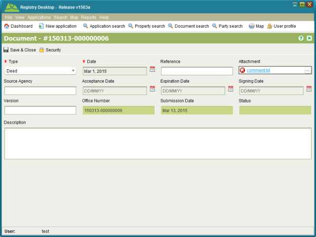

Add or Update a File Attachment on an Existing Document
SOLA State Land allows you to create a new document without adding an attachment. If you
need to add or update an attachment for an existing document, you can Edit the document from
the Job Details Documents tab or you can search for the document using Document Search and
edit it from there.
Edit the document from
the Job Details Documents tab or you can search for the document using Document Search and
edit it from there.
Steps
-
-
Locate the document to edit on the Documents tab of Job Details or by searching for the
document using the Document Search screen.
-
Select the document to update in the results list and click theEdit tool to open the Document Details screen.

Document Details
-
-
Edit the document information and/or change the file attachment as required.
-
Click
 Save & Close to save the
changes.
Save & Close to save the
changes.
-
If the document was opened from Job Details, click Save on the Job Details to ensure the changes are saved.
Also See
-
-
SOLA State Land
-
State Land Desktop Screens